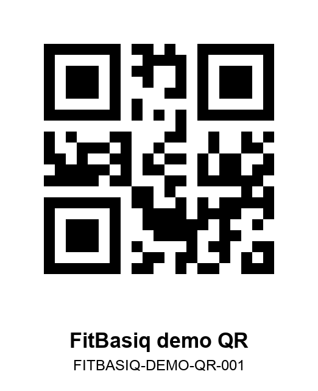

FitBasiq demo QR code
This QR code is provided for Apple App Review to test the local gym equipment QR-linking feature in FitBasiq.
QR value: FITBASIQ-DEMO-QR-001

How to test
- Open FitBasiq and create or sign in to a test account.
- Go to Profile -> QR тренажёров.
- Tap Сканировать QR-код and scan this QR code.
- If the QR code is not linked yet, select any exercise to link it.
- Scan the same QR code again to add the linked exercise to the active workout.
The QR feature is local to the user's account and does not upload photos or camera frames.